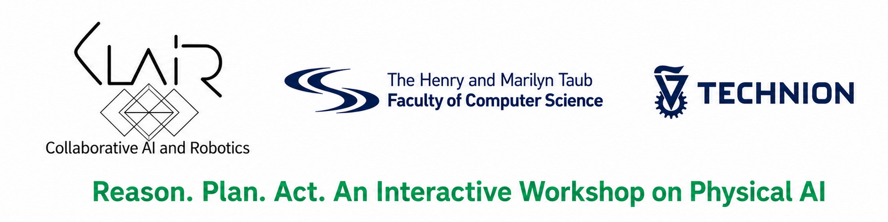
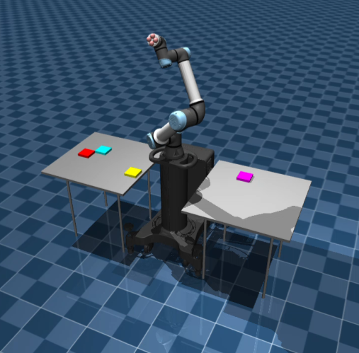
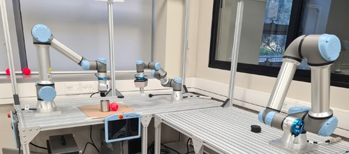
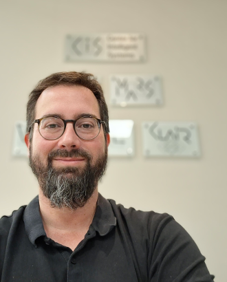
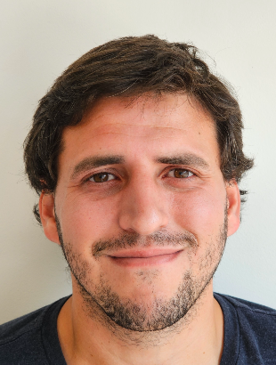

Reason
Represent tasks, goals, and constraints through symbolic and hierarchical models.

Technion AI Days
An Interactive Workshop on Physical AI
October 18-22 2026
Connect abstract AI reasoning with reliable decision-making and execution in complex physical environments.
Led by Dr. Sarah Keren, Dr. David Dovrat, Guy Azran, and Almog Anschel from CLAIR Lab
From intelligence to action
The workshop integrates symbolic reasoning, geometric planning, perception, and execution into coherent decision-making systems, with an emphasis on modern planning and learning techniques for operating under uncertainty.
Hands-on learning
Participants will implement and experiment with core algorithms, gaining practical insight into the complete reasoning-to-action pipeline.
Represent tasks, goals, and constraints through symbolic and hierarchical models.
Combine task and motion planning with perception and decision-making under uncertainty.
Test planning and learning methods in realistic simulation and on physical robots.
Workshop objectives
The workshop gives participants a practical understanding of how Physical AI systems connect high-level goals with perception, geometry, dynamics, uncertainty, and real-time execution. By the end of the workshop, participants should be able to:
Express goals, actions, constraints, and dependencies using symbolic and hierarchical task representations.
Combine discrete task decisions with continuous geometry, collision constraints, and feasible robot motion.
Account for imperfect sensing, changing environments, and execution failures when choosing and updating actions.
Build core algorithms in interactive notebooks and evaluate them in simulation and on physical robotic platforms.


Workshop format
Designed for undergraduate and graduate students, researchers, and practitioners interested in AI, robotics, autonomous systems, machine learning, and control.
Full program
A five-part progression from Physical AI foundations to integrated experiments on robotic platforms. Exact dates and session times will be announced.
| Day | Time | Focus | Activities | |
|---|---|---|---|---|
| Day 1 | TBD | Foundations of Physical AI and Task Planning | Introduction to Physical AI, the reasoning-to-action pipeline, and browser-based notebook setup. | Symbolic representations, states, actions, goals, constraints, and hands-on planning exercises. |
| Day 2 | TBD | Motion planning and control | Geometric reasoning, collision checking, feasible motion, and integration of task and motion planning. | |
| Day 3 | TBD | Task and Motion Planning | Integration of task and motion planning. | |
| Day 4 | TBD | Planning and Learning Under Uncertainty | Perception, belief updates, learning-augmented planning,, and decision-making in dynamic and uncertain environments. | |
| Day 5 | TBD | Rbot experiments | Simulation experiments, physical robot demonstrations, and closing discussion. |
Meet the team
The workshop is led by members of the Collaborative AI and Robotics Lab (CLAIR) at the Technion.
Workshop Lead · Head of CLAIR Lab

Organizer · CLAIR Lab

Organizer · CLAIR Lab
Organizer · CLAIR Lab
Questions and resources
For questions about the program, participation, accessibility, or registration, contact the workshop organizer.
Join the workshop
Registration is now open. Complete the form to apply for participation.
Register now